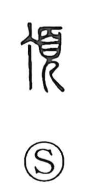

頂

Uncategorized
Kun: itadaku, itadaki | On: cho
summit ・ top ・ crown of the head ・ receive respectfully
Explanation
頂 is a phono-semantic character. The phonetic 丁, originally the plan view of a nail’s flat head, supplies the sound, while 頁 depicts a human head—a figure wearing a ritual cap and bowed in reverence—giving the meaning. Together they indicate the highest part of the body, hence “the crown, the top, the summit” (as in the top of the head). In Japanese this extends to itadaku, the courteous act of receiving with thanks, and evokes images such as a peak crowned with snow.